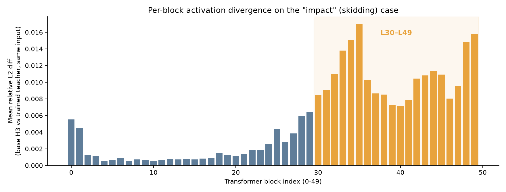

Where does Ref2VA's identity-consistency gain live?
Exploratory · steering-vector test (2/3 cases) + cross-scene generalization · no training involved
A mechanistic-interpretability-style probe, in the spirit of locating specific layers/heads responsible for a learned behavior without any retraining. Main test case: the ref2va_physics_sft_v1 teacher's "impact_collision_breaking" (skidding car) example, where the base model loses the car's identity mid-clip and the trained teacher holds it (see the handoff report's section 4) -- one instance of a pattern that shows up repeatedly across ref2va training campaigns (see below).
Method: ran the trained teacher's real 30-step generation once, hooking each of the 50 transformer blocks. At 6 representative denoising steps, each hook fed the teacher block's real input (hidden_states, temb, adaln_indices, rotary_emb) into the same-indexed block of a separately-loaded base H3 (no LoRA), then diffed that block's output against the teacher's own real output for that identical input. This isolates "how differently does this one block's own weights transform an identical input" -- no need to run two independent generations (which would also diverge in sampled content) and no need to extract raw attention weights out of a fused attention kernel.
This isn't an isolated case
The "impact" case above comes from the ref2va_physics_sft_v1 campaign (12-category qualitative eval). A separate, larger ref2va campaign (ref2va_v7_scaled400, scored on the full official 198-scenario Physics-IQ benchmark) shows the same pattern repeatedly: base H3 treats the reference frame as loose inspiration and drifts off it mid-clip -- wrong physics, hallucinated scene changes, color bleed -- and training fixes it, with a real quantitative score jump (20.23 → 25.91 Physics-IQ, averaged over all 198 scenarios). Two of the clearest individual cases below, both with official Physics-IQ scores per clip.
duck-staticPhysics-IQ score: base 2.9 → fine-tuned 28.7-35.7 (two scoring passes)
A stationary rubber duck on a table. Base H3 invents a slow 90° turn and warps the duck's proportions mid-clip -- treats the reference as inspiration, not a frame to literally continue.
ref2va_v7_scaled400 (step 400)
paper-in-waterPhysics-IQ score: base 16.9-19.6 → fine-tuned 65.3-100.0 (two scoring passes)
A crumpled paper should float at the water's surface. Base H3 sinks it to the bottom of the glass -- a basic buoyancy error.
ref2va_v7_scaled400 (step 400)
A handful more from the same campaign, not re-hosted here: roll-in-box (10.8→57.6), weight-on-ceramic (7.5→30.3), siphon (29.8→58.2), plus several non-Physics-IQ reference-fidelity cases (a coastline scene where base hallucinates farmland onto an isolated cliff; a car-wash clip where base's background trees pick up the car's red paint; a speedboat-wake clip where base drifts to open ocean while the fine-tune holds the reference reef). These two (duck-static, paper-in-water) are the ones that made it into the final published writeup as the clearest individual examples.
Steering vector test: a direction, not a weight swap
A stricter non-training test than the patch test above: instead of copying any trained LoRA weights into base H3, compute a per-block direction -- the mean (teacher output − base output) over several denoising steps, averaged across every packed-sequence row into a single [hidden_dim] vector per block -- from the ref2va_v7_scaled400 campaign's duck-static and paper-in-water cases. Then load a completely fresh base H3 (zero LoRA weights anywhere) and simply add that fixed vector to blocks L30–L49's own output during a real generation, same seed/prompt/reference as the original base run.
duck-staticsteering fixes it
Base H3's real failure here is more severe than "the duck wobbles": it hallucinates an entirely different scene -- a hand holding a phone, the duck shown on the phone's screen. Adding the L30-L49 steering vector to a fresh, zero-LoRA base model removes this drift entirely: stable duck, correct scene, matching the reference -- no trained weights involved anywhere.
Base H3 + steering vector (no LoRA)
paper-in-watermotion fixed, physics not
Closer frame-by-frame inspection splits this into two separate axes. Motion plausibility: fixed. Base's fall is the "frozen-then-teleport" kind of fake: the paper hangs completely unsupported in mid-air (disconnected from the tongs, which stay empty up top) from t≈1.2s to past t≈2.4s, then jump-cuts to sunk by t≈4s -- no visible continuous motion in between. Steered has no such glitch: the paper is already at the bottom by t≈1.2s and stays there, settled, for the rest of the clip -- nothing floats unsupported. Physical outcome: still wrong. Steering doesn't make the paper float where it should; it just reaches its (incorrect) resting position cleanly instead of via an impossible mid-air freeze. Suppressing a visual implausibility and getting the actual physics right are two different things, and only the first one transfers from the scene-drift vector tested here.
Base H3 + steering vector (no LoRA)
roll-in-boxsteering fixes it
A different kind of drift again: the prompt says "static shot with no camera movement," and base H3 ignores that -- it opens on a correct wide shot matching the reference, then zooms in steadily over the clip until it's an extreme close-up by the end, with the ball looking like it's clipping through the box's wall at that scale. The same L30-L49 steering vector (built fresh from this case's own teacher-vs-base diff), applied to a zero-LoRA base model, holds the camera at the reference's framing for the whole clip -- ball correctly inside the box throughout, no zoom drift.
Base H3 + steering vector (no LoRA)
scene/composition drift (the model wandering off what the reference frame actually shows -- hallucinating a different scene entirely, as in duck-static; silently violating "no camera movement," as in roll-in-box; or faking a fall by freezing an object unsupported in mid-air then jump-cutting it to its end state, as in paper-in-water) looks additive: a single fixed direction, injected into a model that has never seen a single trained weight, is enough to suppress it cleanly, with no side effects visible across the whole clip. All three tested cases show this kind of fix. What the same vector does not do is get the underlying physics right: paper-in-water's object still settles in the wrong place (sunk, not floating) even once its motion stops looking fake. Suppressing an incoherent/implausible-looking motion and computing the correct physical outcome are different capabilities, and only the first transfers from this vector.
Does one vector generalize across scenes?
Every steering result above used a vector built from that same case's own teacher-vs-base diff, then applied back to regenerate that same case -- which leaves open whether each "fix" was really a general scene-fidelity direction, or just an overfit patch tailored to that one clip's specific sampling trajectory. Stronger test: take the vector built from one case and apply it to a different case's own prompt/reference/seed, with zero re-extraction.
roll-in-box's vector → applied to duck-staticstill fixes it
The direction was built entirely from a tennis-ball-rolling-into-a-box clip and never saw a duck. Applied to duck-static's own generation (same zero-LoRA base, same seed/prompt/reference as every other duck-static test here), it still removes the phone-hallucination drift -- the duck stays put, matching the reference, exactly as well as duck-static's own self-derived vector did.
Base H3 + roll-in-box's vector (cross-applied)
duck-static's vector → applied to roll-in-boxpartial, asymmetric
The reverse direction. Duck-static's vector keeps the camera locked to the reference framing for the whole clip -- no zoom drift, same fix roll-in-box's own vector gave. But the ball itself ends up resting outside the box, not inside it -- roll-in-box's own self-derived vector got this right, duck-static's doesn't. Generalization here isn't symmetric: a vector built from a pure scene/camera-drift case transfers the camera-stability fix but not the finer "this specific object lands in this specific place" correction.
Base H3 + duck-static's vector (cross-applied)
Taken together: a scene/composition-drift vector generalizes to other instances of the same broad failure family (something is wandering off the reference) but not necessarily to every specific sub-detail of a different case. One direction transferred fully (roll-in-box → duck-static); the other transferred the camera-stability part but not the object-placement part (duck-static → roll-in-box). Still much better evidence than a curve-fit that only worked on its own source clip would give.
A messy source gives a bad vector
Following up on the boss's interest in gravity specifically: tried building a vector from "ball-and-block-fall" (two objects should fall together under gravity). This source contrast turned out not to be clean -- base H3 loses track of the ball entirely (only the block lands) while v7g400 loses track of the block instead (only the ball lands, mid-bounce) -- each model fails in a different way, not "one right, one wrong." Building a steering vector from this pair anyway and applying it produced a worse result than either source video alone.
ball-and-block-fallworse than either source
Base: block lands on the pillow, ball vanishes entirely. v7g400: ball lands (visible motion blur, mid-bounce), block vanishes entirely. Steering with the vector built from this pair: both objects missing -- empty grabbers, empty pillows, strictly worse than either individual source clip.
Base H3 + this vector (both missing)
Lesson for building a dedicated "gravity" vector: the method is only as good as its source contrast. A genuinely clean gravity-specific candidate was found separately -- paper-fall-water (base: a grabber holds the paper frozen over the bowl for the entire clip, it never falls at all; v7g400: clear, continuous falling motion into the bowl) -- a real "doesn't fall at all" vs "falls correctly" pair, unlike this one. Results from that pair pending.
The known contrast: base H3 vs the trained teacher (impact case)
skidding (impact_collision_breaking)
prompt: “skidding” — reference frame extracted from the source clip
Trained teacher (checkpoint-400)
Per-block activation divergence

| Rank | Block | Mean rel. L2 diff |
|---|
| 1 | L35 | 0.0170 |
| 2 | L49 | 0.0158 |
| 3 | L34 | 0.0150 |
| 4 | L48 | 0.0148 |
| 5 | L33 | 0.0138 |
| … | (blocks L0–L27 mostly sit at 0.0005–0.003, roughly an order of magnitude smaller) |
Causal test: does patching just those layers reproduce the gain?
Non-training patch test: load base H3, apply the teacher's LoRA weights to only a chosen subset of blocks (everything else -- including token_refiner -- stays pure base), regenerate the identical skidding case (same seed/prompt/reference), and check whether the car's identity holds. Two subsets tested: the top-5 blocks by activation diff (L33, L34, L35, L48, L49) and the full back third (L30–L49, 20 blocks).
Top-5 highest-diff blocks only (L33/34/35/48/49)artifact persists
Base + LoRA on L33/34/35/48/49 only
The hallucinated motorcycle-helmet driver is still there at ~t=3.0s and ~t=3.5s, same as plain base H3. The 5 highest-individual-diff blocks are not sufficient on their own.
Full back third (L30–L49, 20 blocks)matches teacher quality
Base + LoRA on L30-L49 only
No helmet, no hallucinated detail at any checked timestamp (0.2/1.0/1.5/2.0/2.5/3.0/3.5/4.0s) -- driver and livery stay coherent, matching the full teacher's quality, with everything before L30 left at base weights.